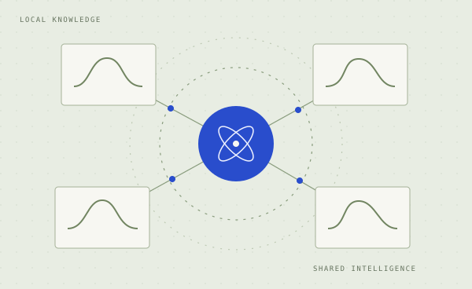
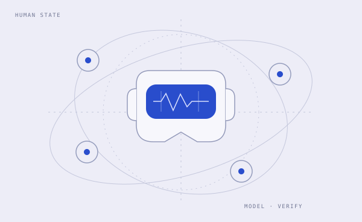
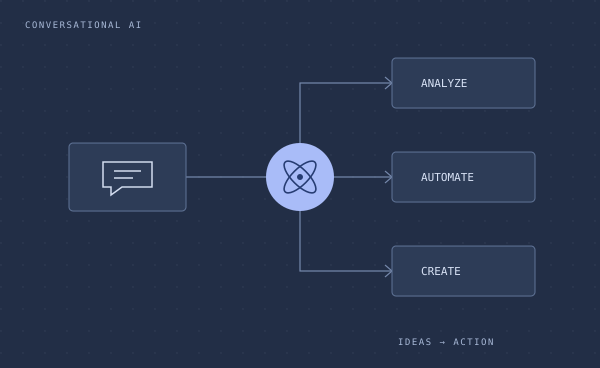

2026
Paper
Researcher. Builder. Curious by nature.
Making AI
more reliable.
More useful.
I’m Peng, an AI researcher working at the intersection of Bayesian learning, distributed intelligence, and human-centered systems. I turn questions about uncertainty into methods—and methods into things people can use.

Based in Boston, MA吴鹏
Bayesian & federated learning
Multi-agent intelligence
Human-centered AI
01 / Selected work
Ideas, tested in the world.

Learning better, together
Bayesian methods for sharing knowledge across clients with different data, while reasoning about uncertainty.
IEEE TPAMI · 2026

Human state, modeled
Connecting probabilistic models and verification to understand cybersickness and cognitive security.
IEEE ISMAR · 2025

AI agents for advertising
Building AI agents for ads that connect campaign data, analysis, content creation, and automation.
AgentMark.ai · Chief Scientist
02 / From the research desk
A few recent papers.
2025
PDF
2025
Paper